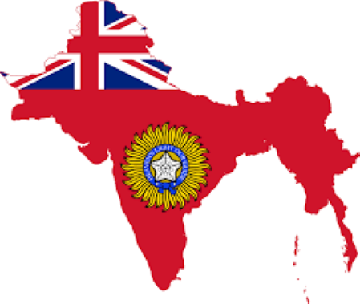

-

Chapter 2: The Colonization era
2.1 The East India Company and the British Raj
From 1858 until 1947, the Indian subcontinent was under British colonial control, popularly known as the British Raj or British India. The East India Company, a for-profit British trade company that was instrumental in the colonization and exploitation of India, was at the centre of this colonial operation. A group of English businessmen who wanted to develop trade with the East Indies, which included what are now Indonesia, Malaysia, and the Philippines, created the East India Company in 1600. The Company eventually extended its presence into India, where it built a network of coastal factories and commercial ports. Cotton, silk, tea, and opium, which were in high demand in Europe and China, were the company's principal products. The Company's position in India expanded quickly in the 18th century as it used a combination of diplomacy, force, and bribery to seize control of important ports and regions. The Company had formed a de facto empire in India by the middle of the 18th century, complete with its own soldiers, government, and legal system. Economic imperialism and cultural exploitation coexisted throughout the Company's control in India. The Company levied high tariffs on Indian traders and farmers, frequently leaving them in a desperate situation. The Company also brought Western education and values at the same time, undermining traditional Indian identity and culture. The Opium Wars, which occurred between 1839 and 1860, rank among the most important moments in the history of the Company. Opium was provided by the Company to China at this time, which resulted in widespread addiction and societal instability. A series of battles that led to the colonization of Hong Kong and the opening of China to Western trade was caused by the British's use of military force in response to the Chinese government's attempt to outlaw the opium trade. Following the Indian Rebellion of 1857, the Company's authority over India came to an end in 1858. Many complaints about the Company's administration, including economic exploitation, cultural imperialism, and religious intolerance, served as the catalyst for this insurrection, also known as the Sepoy Mutiny. The British ultimately put an end to the uprising, but not before the East India Company was dissolved and the British Crown was given control. Direct sovereignty over India was established by the British administration. The British Raj, which covered the years 1858 to 1947, is the term used to refer to this time of direct British authority. A Viceroy, chosen by the British king and in charge of overseeing the nation's administration, presided over India during the British Raj. A Council of India, which was composed of Indian and British advisors, supported the Viceroy. The Council was in charge of establishing laws and rules as well as advising the Viceroy on administrative issues. Many initiatives and programs aimed at modernizing India and advancing British interests characterized the British Raj. Some of these regulations, like the introduction of modern education and the building of infrastructure like railroads and telegraph lines, were beneficial. Others, meanwhile, such as the imposition of high taxes, the eviction of Indian farmers from their fields, and the repression of Indian customs and culture, were seriously detrimental. In the late 19th century, a growing sense of nationalism and a desire for self-rule sparked the Indian independence movement. Mahatma Gandhi, Jawaharlal Nehru, and Subhas Chandra Bose were among the eclectic group of Indian leaders who spearheaded the campaign and employed a range of strategies to press for Indian independence. In response to the independence movement, the British administration used both repression and reform. On the one hand, they repressed rallies and demonstrations while also detaining and imprisoning Indian leaders like Gandhi. On the other hand, they also put forth changes like the Government of India Act of 1919, which granted Indians a meagre amount of participation in the executive branch. Indian soldiers and civilians contributed significantly to the war effort during World War II, which gave the independence movement in India a boost. After the war, the British government, which was deeply in debt, was unable to keep control of India and in 1947 consented to the division of India into the independent countries of India and Pakistan. Hindus, Muslims, and Sikhs clashed in a series of riots and massacres during the partition of India, which was marked by violence and bloodshed. Thousands of individuals were killed, and millions of people were displaced. In South Asia's history, the division is still regarded as a tragic and controversial event. In the wake of an extended battle for Indian independence, the British Raj came to an end. The Raj was a time of exploitation and oppression, marked by economic exploitation, cultural imperialism, and political repression, notwithstanding the introduction of certain beneficial reforms and modernization initiatives. The British Raj and the East India Company were two interconnected facets of British colonization in India. Economic exploitation and cultural imperialism were defining characteristics of the Company's control, which paved the way for the British Raj that came after. Even though the Crown's control came to an end in 1947, its effects have continued to influence India's future political, economic, and cultural growth.
2.2 The rivalry with the Dutch
The British and Dutch empires engaged in a ferocious battle for dominance over international trade routes, colonies, and lands throughout the 17th and 18th centuries. The Anglo-Dutch Wars were a series of wars between the two empires. The first war, which lasted from 1652 to 1654, was brought on by conflicts over trade with the East Indies and maritime authorities as well as economic and political rivals. The British attempted to overthrow the Dutch's dominant position in the trade of spices and other goods from Asia, but both sides suffered severe losses as a result. The War was terminated by the Treaty of Westminster, but neither side's existing geographical holdings were altered. The East Indies' commercial hegemony and maritime dominance were the key issues in the second war, which raged from 1665 to 1667. The British were interested in gaining control of the Dutch colonies and commercial routes in the area, while the Dutch tried to defend their position as the leading force. Both sides suffered heavy casualties in the conflict, which concluded with the Treaty of Breda, which saw the Dutch hand over control of the British territory of New Netherlands. Commercial and colonial rivalries, as well as the ambition of the French monarch Louis XIV, who wanted to weaken both powers, led to the third war, which was fought from 1672 to 1674. Both sides suffered significant losses in this battle, which was also fought on the seas and in the colonies. Each side kept its pre-war territory as a result of the Treaty of Westminster, which put an end to the conflict while maintaining the pre-war situation. The Dutch helped the American colonies fight the British in the fourth war, which lasted from 1780 to 1784 and was a part of the American War of Independence. The Treaty of Paris, which secured the United States' independence and put a stop to hostilities between the British and Dutch, brought this conflict to a close after suffering heavy losses on both sides. In general, the Anglo-Dutch Wars were marked by fierce rivalry and disputes over trade, lands, and colonies. The conflicts had a huge impact on the growth and layout of the British and Dutch empires, altering trade, maritime dominance, and colony ownership all over the world. Both sides suffered huge casualties in troops and ships as a result of the wars, which also had a high human cost.
2.3 African Resistance to British Colonialism
The British Empire grew throughout Africa in the 19th and 20th centuries, setting up colonies and imposing political and economic rule over native populations. Although there were many different reasons for this colonization, the main ones had to do with Britain's goal to increase its worldwide power and exploit Africa's natural resources. However, colonial domination by the British had a terrible impact on African societies. African people and resources were exploited by the colonial powers, frequently with terrible brutality. They enacted laws that ignored and persecuted indigenous people, erected oppressive systems of government, and used military force to subdue African communities. The impact on the African economy was one of the most important effects of British colonization. The trading arrangements established by the colonial powers were severely biased in their favour and frequently left the economies of Africa in ruins. Gold and diamonds were among the natural riches that the British plundered in Africa while enacting laws that denied Africans access to these resources. African labourers were exploited and mistreated as a result of the colonial powers' use of forced labour to harvest resources and construct infrastructure. Africans were frequently made to work in appalling conditions for little to no pay. In addition, the British enacted policies that frequently resulted in bloodshed and conflict and were intended to marginalize and subjugate indigenous peoples. The implementation of apartheid in South Africa, which formalized racial segregation and discrimination against black Africans, is a notable example of this kind of policy. Nevertheless, African populations rebelled against colonial control and founded resistance movements to achieve independence, despite the cruel impacts of British colonization. Kenya, for instance, attained independence from Britain on December 12, 1963, following an extended and bloody uprising against British colonial rule under the leadership of Kenyan nationalist Jomo Kenyatta. Kenya's fight for independence was significantly aided by the Mau Mau Rebellion, a guerilla conflict waged by Kenyan insurgents; Nigeria (which became independent from Britain on October 1, 1960, following a series of negotiations with British officials); and Egypt (which became independent from Britain on February 28, 1922, following an extended time of British occupation). But up to the Suez Crisis in 1956, when the Egyptian government nationalized the Suez Canal, British sway over Egypt remained substantial. It is impossible to overestimate the effects of British colonization on Africa. It had a significant impact on the political, economic, and social landscape of the continent, and those impacts may still be seen today.